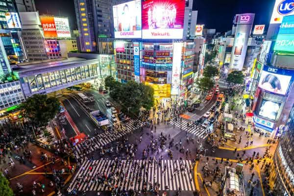
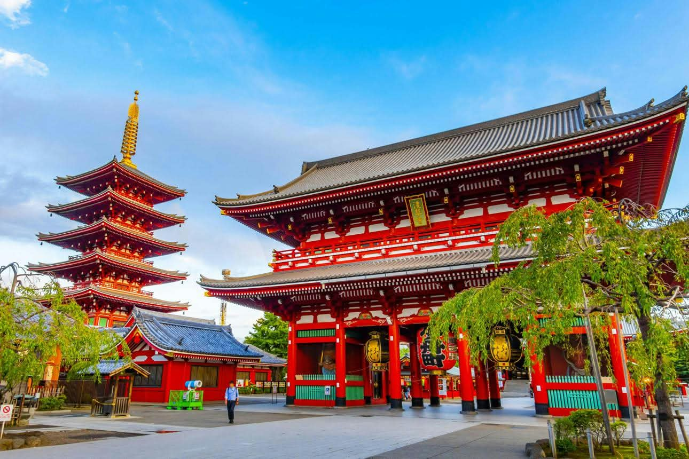
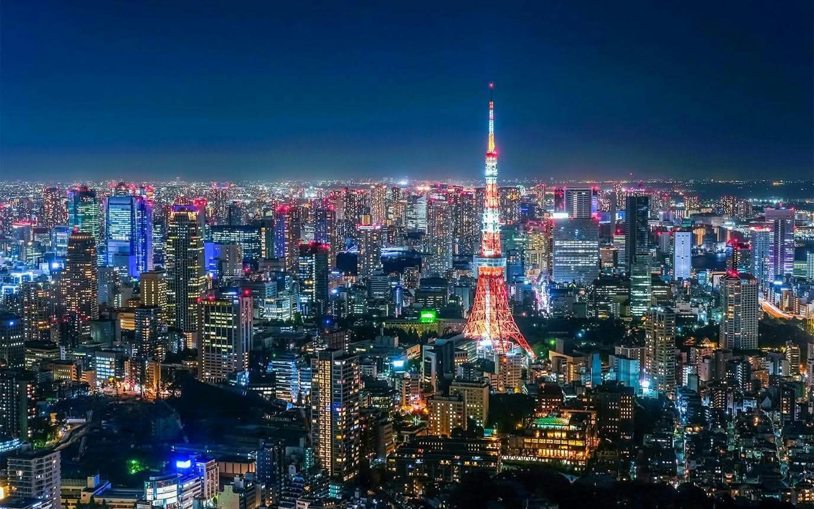

Tokio
Tokio es una metrópolis deslumbrante donde la ultra modernidad y la tecnología de vanguardia conviven en perfecta armonía con antiguos templos y tradiciones milenarias. Desde rascacielos iluminados por neones hasta tranquilos jardines de cerezos, es un destino fascinante y lleno de energía.

El Cruce de Shibuya es uno de los pasos peatonales más concurridos y famosos del mundo. Rodeado de pantallas gigantes, luces de neón y comercios, refleja el ritmo dinámico y moderno de Tokio.

El Templo Senso-ji en Asakusa es uno de los templos más antiguos y emblemáticos de Tokio. Fundado en el año 645, es un ejemplo destacado de la arquitectura tradicional japonesa y un lugar de peregrinación para muchos visitantes.

La Torre de Tokio es un icónico símbolo de la ciudad, inspirada en la Torre Eiffel. Con 333 metros de altura, ofrece vistas panorámicas impresionantes y es un punto de referencia en el horizonte urbano de Tokio.